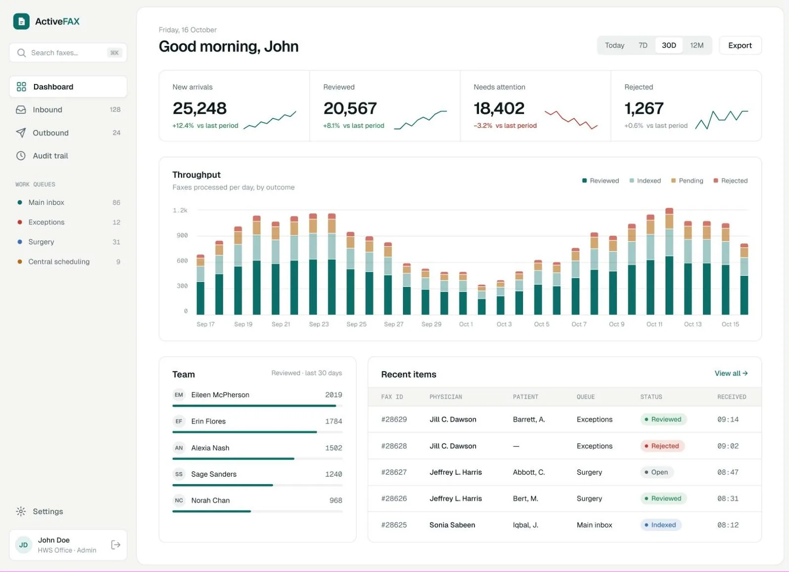
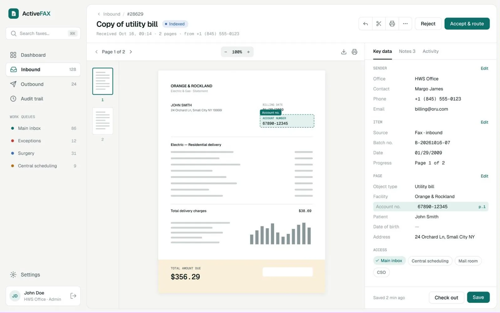

ActiveFAX


01 · Document processing
ActiveFAX
A fax intake platform redesigned so staff triage, verify and route documents with less effort.
- Client
- HealthWare Systems
- Role
- Product design, end to end
- Platform
- Web app + admin console
- Scope
- Audit, system, redesign
Challenge
Four typefaces, about fifteen competing colours, a header repeated on every screen and hard-to-read charts, in a tool staff use all day.
Approach
Audit first, then five principles and a token system: one typeface, one accent where colour means status, left navigation, quiet tables, document-first review.
Delivered
Sign-in and 2FA, dashboard, inbound and outbound queues, OCR-highlighted review, audit trail and a 31-screen admin console.